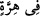
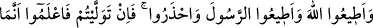
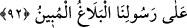

demektir. Nitekim Rasûlullah (s.a.v)’in: “Gerçekten bir kadın, bir kedi yüzünden
cehenneme girmiştir.”[35] hadisindeki “
” sözü de “bir kedi sebebiyle, kedi
yüzünden” demektir. Âyetin mânâsı, “İçki içilmesi sebebiyle aranıza düşmanlık ve kin
sokmak ister.” demek olur.
İçki ve kumarın özellikle zikredilmesi, bu ifadelerde asıl vurgulananın bunlar
olduğuna dikkat çekmek içindir. Çünkü bu âyet mü’minlere hitab etmektedir. Esas
maksad da onları içkiden ve kumardan uzaklaştırmaktır.
Dikili taşlar (putlar) ve fal okları, her ne kadar Cahiliye ehline mahsus şeyler olsalar
da burada içki ve kumar ile beraber zikredilmesinin iki sebebi vardır:
1- İçki ve kumarın ne kadar çirkin olduğunun vurgulanması,
2- Bu dört şeyin kötülük ve zararlarının birbirine yakın olduğunu tekid etmek.
“Sizi Allah’ı anmaktan ve namazdan alıkoymak ister.” Burada içkinin dînî
zararlarına işaret edilmektedir. Nitekim içki geçici bir neş’e ve cismânî lezzet verir.
Nefis lezzete dalınca Allah’ı hatırlamaktan ve namazdan gafil olur. Kumar oynayanın
durumu da bundan farklı değildir. Eğer kumarda galib olursa, içinde yüzdüğü bu zafer
sarhoşluğu, onu ibadet hususunda gaflete düşürür. Eğer yenilmişse, bir yolunu bulup
kazanan taraf olmak için göstereceği gayret onu kumar dışında başka bir şey düşünemez
hale getirecektir.
“Zikir” mefhûmuna dahil olduğu halde burada “namaz”ın da ayrıca zikredilmiş
olması, namaza verilen önemden kaynaklanmaktadır. Ayrıca dînin direği olduğu için
ondan alıkoyanın, îmandan alıkoyan kimse gibi olacağına dikkat çekilmiştir.
“Artık (bunlardan) vazgeçtiniz değil mi?” cümlesi, lafzen soru olsa da mânâsı
emirdir. Yani “Vazgeçin” demektir. Bu üslub, en yumuşak yasaklama üslubu olarak,
insanların bu işten vazgeçmelerini en iyi temin edeceği için kullanılmıştır. Nitekim Hz.
Ömer (r.a.) bu âyeti işitince “Vazgeçtik, yâ Rabbî!” demiştir. İçki, hicretin üçüncü
yılında Uhud Savaşı’ndan sonra haram kılınmıştır.
92. Allah’a itâat edin, Rasûl’e de itâat edin ve (kötülüklerden) sakının. Eğer
(itâatten) yüz çevirirseniz bilin ki Rasûlümüz’e düşen apaçık bir tebliğden
ibârettir.
Emrettikleri hususlarda “Allah’a itâat edin, Rasûl’e de itâat edin ve” yasakladıkları
şeyleri yapmaktan da “sakının. Eğer” bu hususlara riayet ve itâatten “yüz çevirirseniz
bilin ki Rasûlümüz’e düşen, apaçık bir tebliğden ibarettir.” Zaten elçimiz de bu
görevini, daha iyisi mümkün olamayacak şekilde yerine getirerek peygamberlik
sorumluluğundan kurtulmuştur. Böylelikle aleyhinize bir delil ortaya çıkmış, özür ve